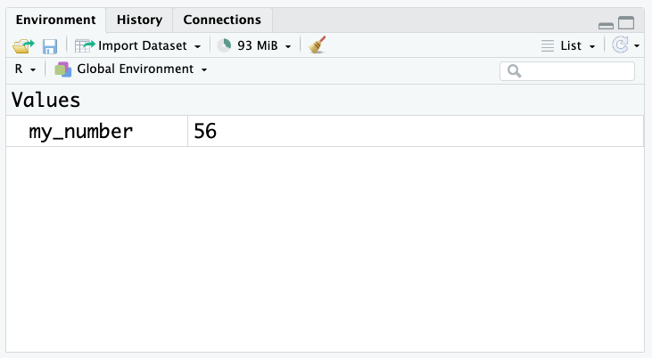
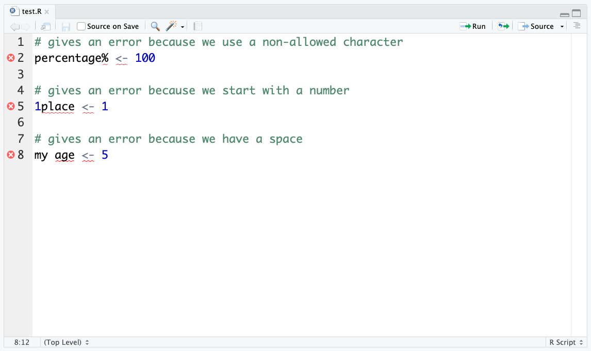
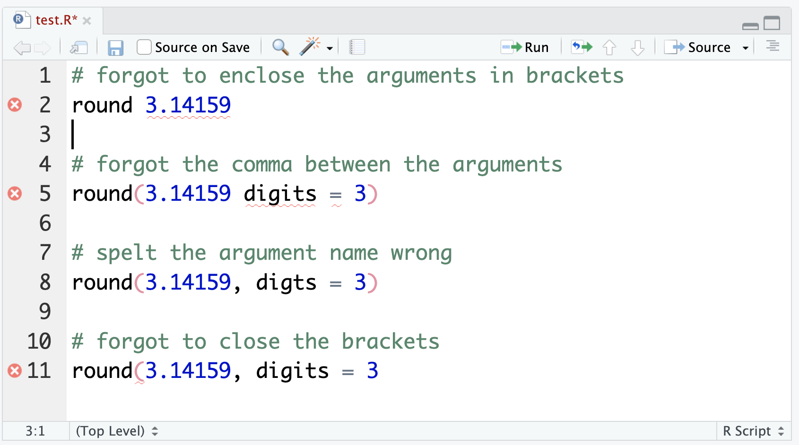
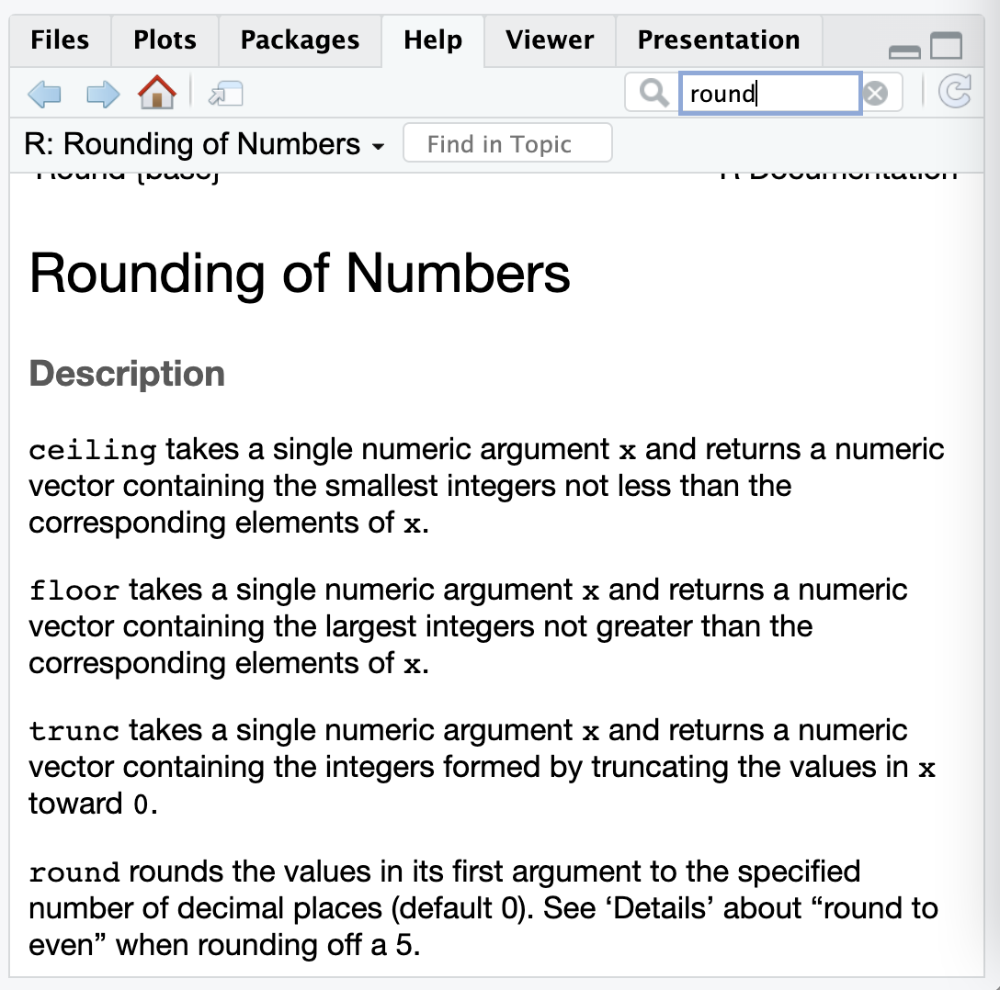
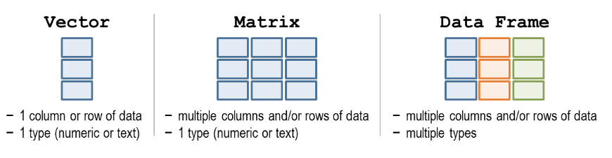
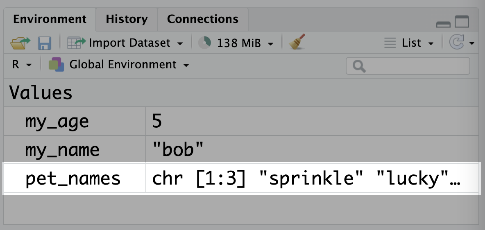
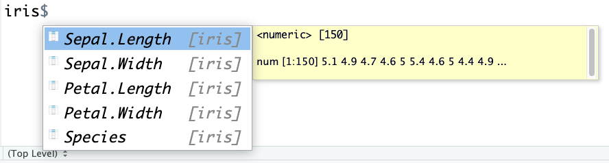

oops I forgot the hashtagError in parse(text = input): <text>:1:6: unexpected symbol
1: oops I
^In this first workshop, we will get familiar with R.
At the end of this session, learners should be able to:
Use RStudio, R projects and R scripts
Perform basic mathematical operations, comparisons and function calls in R
Employ variables to store the results of analyses
Describe the different data types and data structures used in R
Compose R code that uses subsetting to operate on vectors and data frames
Welcome to the first R coding workshop! You’ve had a go at writing some basic R code in tutorial 1 last week, and today we will build on that to develop a strong foundation in R.
The first thing we need to do is open the R project that we will use in these workshops. As covered in lecture 2, projects are a way we can organise our work in RStudio, so that we can resume where we left off and keep different analyses separate. Any time you start working on something new (like these workshops!) it is recommended that you start a new project. To make things easier, we have pre-made an R project with all of the data you will need for the workshops. If you haven’t already, download it using the button below:
Once downloaded, you can move this file to wherever you’d like on your computer, and unzip it (on mac: double-click, on windows: right-click, then ‘extract all’).
Inside the ‘BIOL90042_workshops’ folder, you should see two things: a sub-folder called ‘data’ and an R project file:

Double-click on this .Rproj (R project) file, and it should open up in RStudio. You now have a new R session, where you are working inside of a project called ‘r_course’.
You can see the current project you’re working on, switch between projects or create a new project using the menu in the top right hand corner of RStudio:

You’ll notice I named my project using an underscore (r_course) rather than a space (r course). In general, when coding we want to name things without spaces, so that it is clear to the computer that we are talking about a single entity (the ‘r_course’) as opposed to multiple things (‘r’ and ‘course’). We’ll revisit this idea later in the session in Section 4.3
Now that our project is set up, recall that we need to create a file to write our code in:

Remember that this file is called an R Script. Don’t forget to save your R Script as you work so you don’t lose your progress! You can do this through the file menu or by using the keyboard shortcut Cmd-SCmd-S.
Now we are ready to write some code! You might like to start with some of what we learned last week, in section Section 1.2 of the ebook.
Before we get into writing code though, let’s first learn about one of the most important concepts in programming: comments. Comments are lines of our script that begin with # and they are ignored by the computer: they are just notes that we write to ourselves. It’s really important to write ‘well-commented’ code, with plenty of comments that clearly explain what your code is doing, so that your script can easily be understood by whoever looks at it next (whether this is someone else or you revisiting an analysis many months later!)
If you forget the # at the start of your comment, R will try to interpret your notes as actual code, and you’ll get an error message:
oops I forgot the hashtagError in parse(text = input): <text>:1:6: unexpected symbol
1: oops I
^During this course, we will practice writing well-commented code, but here is an example of how we could write comments to explain the code for one plus one:
# calculate one plus one
1 + 1 # the + symbol means plusNote that comments can be written on their own line or at the end of a line after the code. Crucially, you cannot write any code after a # on the same line, as R will ignore it. This is sometimes useful for ‘commenting out’ code that you don’t want to run, but want to keep in your script for later use.
Try these practice questions to test your understanding
1. Which R expression would give me a result of 10?
✔10 + 0 # + 60
✗1 + 2
✗# 5 + 5
✗100 - 50
2. What would be the result of running this line of R code: # test 1+1
✗1
✗2
✗An error
✔Nothing
10 + 0 # + 60 is equal to 10, because the + 60 is after the comment symbol #. If you’re not sure, try copy-pasting this code into the console and running it! The best way to learn is by doing.
The code # test 1+1 is a comment, because it starts with a #. This means R ignores it: if you run this code, you won’t see any output in the console.
Now, let’s learn some new R code! We’ll start with comparisons.
R can perform comparisons, using the following notation:
| Comparison | Code |
|---|---|
| Equal to | == |
| Not equal to | != |
| Greater/less than | > or < |
| Greater/less than or equal to | >= or <= |
Be careful to use double equal signs == when checking for equality. If you use only one, you’ll get an error:
1 == 1 # this is TRUE[1] TRUE1 = 1 # this gives an errorError in `1 = 1`:
! invalid (do_set) left-hand side to assignmentComparisons in R return either TRUE or FALSE:
10 > 10[1] FALSE10 >= 10[1] TRUEYou can also negate the result of a comparison or any TRUE/FALSE value by using the ! operator before the expression.
# gives FALSE (i.e. not TRUE)
!TRUE[1] FALSE# gives TRUE: 1 is not equal to 2, but we've negated the result
!(1 == 2)[1] TRUEThis is really useful for filtering data, which we will cover in ?sec-workshop02
Try these practice questions to test your understanding
1. What would be the result of running this R code: 10 >= 10
✗10
✗FALSE
✔TRUE
✗An error
2. Which of the following R expressions would give me a result of FALSE?
✗1 == 1
✗1 != (3 - 4) * 1
✗1 = 10
✔1 == 2
3. What would be the result of running this R code: !TRUE
✔FALSE
✗TRUE
✗An error
✗Nothing
10 >= 10 is TRUE because 10 is equal to 10, and we are using the greater than or equal to operator, >=.1 == 2 is the only expression that would give a result of FALSE. Be mindful that 1 = 10 is not a valid expression in R, and would give an error (since we need to use the double equal sign == for comparisons).!TRUE is FALSE because we are negating the value using !.A variable (also known as an object) in R is like a label we can use to keep track of values. We assign (save) values to variables so that we can refer to them later.
For example, let’s say I use R to do some maths:
(2 + 6) * 7[1] 56R outputs simply the result. To use this value later, I would need to assign the output to a variable.
Variables are assigned with the assignment operator <- (you can type this using the << and -- keys, or use the shortcut ).
You might be familiar with assigning values to variables using the equal sign =, which is used in other programming languages and in maths. Although this does also work in R, it’s preferred to use the arrow <- as this makes it really clear that a variable is being assigned. In this course we’ll be using <-.
Returning to our example, let’s save the result of the above calculation to a variable called my_number
# assign the result to my_number
my_number <- (2 + 6) * 7Here, R has performed the calculation to the right of the arrow ((2 + 6) * 7) and assigned the result of this to the my_number variable.
You’ll notice that this line of code doesn’t produce any output, because it has gone straight into our variable. If we want to know the value of my_number, we can either run it as a line of R code, like so:
my_number[1] 56Or, we can look at the environment panel in RStudio:

Variables can be used in place of values (e.g. numbers) in R code. For example, we can use the my_number variable in a calculation:
# multiply my_number by 2
my_number * 2[1] 112As the name suggests, variables can vary! We can assign a new value to a variable at any time:
# change the value of my_number to 12
my_number <- 12
my_number[1] 12Because the right hand side of the arrow is evaluated first, you can also assign to a variable a calculation that involves itself:
# add 5 to my_number
my_number <- my_number + 5
my_number # value is now 17 since 12 + 5 = 17[1] 17One thing we need to be careful of when using variables is that R is case-sensitive. This means that MY_NUMBER is not the same as my_number:
# create the my_number variable
my_number <- (2 + 6) * 7
# produces error because MY_NUMBER is not the same as my_number
MY_NUMBERError:
! object 'MY_NUMBER' not foundThere’s not really any harm in keeping variables around, but if you would like to remove them you can use the rm() function like so:
# assign a variable
my_variable <- 10
# remove it
rm(my_variable) # put the variable name inside the bracketsWe’ll cover functions in more detail in Section 4.4.
If you want to remove ALL the variables you’ve assigned and start fresh, you can use the broom button in the environment panel:

Try using the broom to clean up your environment after completing the practice exercises at the end of this section.
When naming variables, we need to follow these rules:
| Rule | Examples |
|---|---|
| Variable names can only contain letters, numbers and underscores | ✅ Allowed: ❌ Not allowed: |
| Variable names can’t start with a number | ✅ Allowed: ❌ Not allowed: |
| Variable names can’t contain spaces | ✅ Allowed: ❌ Not allowed: |
If we try to create a variable that breaks these rules, R will give an error:
# gives an error because we use a non-allowed character
percentage% <- 100Error in parse(text = input): <text>:2:11: unexpected input
1: # gives an error because we use a non-allowed character
2: percentage% <- 100
^# gives an error because we start with a number
1place <- 1Error in parse(text = input): <text>:2:2: unexpected symbol
1: # gives an error because we start with a number
2: 1place
^# gives an error because we have a space
my age <- 5Error in parse(text = input): <text>:2:4: unexpected symbol
1: # gives an error because we have a space
2: my age
^RStudio will try to help you spot these mistakes in your script, by using underlining them in red:

Beyond those three key rules, there are also some best practices we should try to keep in mind when naming our variables:
Try not to use capital letters. Since R is case sensitive, Genes is a different variable to genes. It can be easy to forget to use a capital letter, so it’s generally better to avoid them if you can.
Use descriptive names. It’s better to use a longer name that describes what the variable is for, rather than a short name that doesn’t give much information. For example, gene_counts is better than gc. You’ll thank yourself later when you come back to your code and can’t remember what gc stands for!
Avoid using names that are already used in R. For example, mean is a function in R that calculates the average of a set of numbers. If you use mean as a variable name, this could lead to errors: how will R know if you are referring to the function mean or your variable mean?
Try these practice questions to test your understanding
1. How would I assign the value of 10 to a variable called my_variable?
✗10
✔my_variable <- 10
✗my_variable = 10
✗my variable <- 10
2. I have assigned the value of 10 to a variable called my_variable as in Q1. What then would be the output from running this line of R code: my_variable + 5?
✗An error
✗Nothing
✗5
✔15
3. I have assigned the value of 10 to a variable called my_variable as in Q1. If I run the code my_variable <- my_variable + 10, what is the new value of my_variable?
✗10
✗25
✔20
✗my_variable
4. Which of the following is a valid variable name?
✗10th_place
✗(n)_mice
✗disease status
✔expression_level
my_variable <- 10 is the correct way to assign the value of 10 to a variable called my_variable. Remember the arrow <- is used for assignment in R.my_variable is 10 and we are adding 5 to it.my_variable would be 20, since we are adding 10 to the current value of my_variable (which is 10). Note that even though we added 5 to my_variable earlier, this value is not saved anywhere (since we didn’t assign it), so we are starting from the original value of 10.expression_level is the only valid variable name. 10th_place starts with a number, (n)_mice contains brackets, and disease status contains a space.Functions are programs that take inputs (also known as arguments) and produce outputs. They have a name, followed by round brackets () which contain the arguments.
For example, when we used the code rm(my_variable) earlier, the function rm() was taking the input (argument) my_variable and producing the output of deleting that variable.
Some functions have multiple arguments, which are specified by separating them with commas. Arguments have a set order in which they can be given, or they can be referred to specifically by their name (using a equal sign = to provide a value).
As an example, the round() function rounds a number to a specified number of decimal places. The first argument is the number to be rounded, and the second argument is the number of decimal places to round to.
# we'll use this decimal to demonstrate the round function
decimal <- 3.14159
# round to 3 decimal places
round(decimal, digits = 3)[1] 3.142# we don't have to specify the argument name if we provide the arguments in the correct order
round(decimal, 3)[1] 3.142We can see that both of our calls to the round() function produced the same result, but the first is easier to understand since we explicitly specified the argument.
Many arguments have default values so you don’t need to specify every argument for every function. For example, the round() function has a default value of 0 for the digits argument, so if you don’t specify it, the number will be rounded to the nearest whole number.
round(decimal)[1] 3Here are some common errors you might encounter when using functions. Have a look at the code below and read the error messages to see how the two relate. This will help you to fix typos/errors in your own code.
# forgot to enclose the arguments in brackets
round 3.14159Error in parse(text = input): <text>:2:7: unexpected numeric constant
1: # forgot to enclose the arguments in brackets
2: round 3.14159
^# forgot the comma between the arguments
round(3.14159 digits = 3)Error in parse(text = input): <text>:2:15: unexpected symbol
1: # forgot the comma between the arguments
2: round(3.14159 digits
^# spelt the argument name wrong
round(3.14159, digts = 3)Error in `round()`:
! unused argument (digts = 3)# forgot to close the brackets
round(3.14159, digits = 3Error in parse(text = input): <text>:3:0: unexpected end of input
1: # forgot to close the brackets
2: round(3.14159, digits = 3
^RStudio will also flag some of these sorts of issues in the script panel, although it won’t catch everything:

When you’re using a function, you might not know what arguments it takes, what they do or what their default values are. Nobody can remember all of this information, so one of the most important skills in programming is learning how to access help.
You can access the help pages for a function by typing ? followed by the name of the function:
?roundOr searching for the function in the help tab in RStudio:

Here’s what the help page looks like for the round function:

Help pages can sometimes be quite technical or complicated– for example the help page for round also describes various other similar functions for rounding numbers. Often the most important section to look at is the ‘arguments’ one:

You can also see help for functions in the script panel, as you are typing your code:

It will also suggest you the names of arguments:

So, if you get stuck with how to use a function, wait a moment and see if RStudio will suggest what you need.
Sometimes, the R help pages can be pretty tricky to understand, and they can’t help you if you don’t know the name of the function you need! In this course, we’ll learn about lots of different functions, but even R experts need to look things up sometimes. Here are some good resources for getting help:
Google. R is a pretty popular language, so if you google ‘how to do x in R’, you’ll probably find an answer
Package vignettes. Many R packages have vignettes, which are short guides to using the package. Once you find the name of a package you might want to use, you should go through their vignettes to see what functions are available and how to use them.
ChatGPT/Claude/Gemini (or similar). AI tools can be really useful in helping you write code, although make sure you double-check the results because it can make mistakes. Revisit lecture 1 for tips on how to best use these.
Ask others! There are lots of R users, and working together is often the best way to solve problems. This could be through online forums, like StackOverflow or in-person
No matter where you get your help, try to make sure you understand the code you find. Reading the help pages for new functions, or asking an AI to explain what code is doing is a great way to expand your R knowledge.
Try these practice questions to test your understanding
1. What would be the result of running this R code: round(3.14159, digits = 2)
✗3.14159
✗3.141
✔3.14
✗3
2. Look up the help pages for the following functions, and describe what they do:
mean()Sys.Date()sin()3. What is wrong with this line of R code: round(3.14159, digits = 3
✗Digits is not a valid argument for the round function
✗You need to use a double equal sign == for the digits argument
✗You don’t need to specify the digits argument
✔You need to close the brackets at the end of the line
4. Which of the following lines of R code will run without error?
✗rm(my_variable
✗round(3.14159, Digits = 3)
✗round(3.14159 digits = 3)
✔round(3.14159, 3)
round(3.14159, digits = 2) would be 3.14. Remember the round() function rounds the number 3.14159 to 2 decimal places, according to the digits argument.mean() function calculates the average of a set of numbers, Sys.Date() returns the current date, and sin() calculates the sine of an angle (in radians).round(3.14159, digits = 3 is missing a closing bracket at the end, which is why it would produce an error.round(3.14159, 3) will run without error. The other lines of code have errors: rm(my_variable is missing a closing bracket, round(3.14159, Digits = 3) has a typo in the argument name (argument names are case sensitive), and round(3.14159 digits = 3) is missing a comma between the arguments. Remember that we don’t always need to specify the argument names if we provide the arguments in the correct order, which is why we could omit the digits = part in the correct line of code.Every variable in R has a ‘type’. The type tells R what kind of data it is and consequently what it can and can’t do with the data. For example, it makes sense to perform mathematical functions like multiplication or division on numbers but not on words.
There are three basic types of data in R:
| Type | Description | Examples |
|---|---|---|
logical |
also known as ‘boolean’, true or false |
|
numeric |
numbers |
|
character |
text/numbers surrounded by quotation marks (double "" or single ''). Also known as a ‘string’ |
|
These are called ‘atomic’ data types as they are the most basic types of data from which other data types derive.
You can find the type of something using the class() function:
class(TRUE)[1] "logical"class(1)[1] "numeric"# whatever you put in quotation marks is always a character
class("hello")[1] "character"class("TRUE")[1] "character"class("123")[1] "character"It is important to know the type of your data because, as mentioned earlier, R will not let you perform certain operations on data of the wrong type. For example, you can’t add two characters together:
# this works
1 + 1[1] 2# but this gives an error
"1" + "1"Error in `"1" + "1"`:
! non-numeric argument to binary operatorNor can you use the logical operator ! on a character:
# this works
!TRUE[1] FALSE# but this gives an error
!"TRUE"Error in `!"TRUE"`:
! invalid argument typeYou’ll notice that the error messages for these two examples explain that R can’t perform the operation you’re asking it to do on that data type.
If you want to change the type of a piece of data, you can use the as.x() functions like (e.g. as.logical(), as.numeric(), and as.character()):
# convert a number to a character
as.character(100)[1] "100"# convert a character to a number
as.numeric("100")[1] 100Of course, it doesn’t make sense to make some conversions. In the example below, we can’t convert the word “hello” to a number, so we get an NA:
# if a conversion is not possible, you'll get an NA
as.numeric("hello")Warning: NAs introduced by coercion[1] NATry these practice questions to test your understanding
1. What are the three atomic data types in R?
✔logical, numeric, character
✗integer, float, string
✗dataset, vector, matrix
✗boolean, text, number
2. How do you find the type of a piece of data in R?
✗You can’t
✗Using the type() function
✗Guess
✔Using the class() function
3. How would you convert the character “TRUE” to a logical?
✗TRUE
✔as.logical("TRUE")
✗You can’t convert a character to a logical
✗Using the logical() function
4. What are the types of the following?
11
"eleven"
TRUE
!FALSE
0.49826
"-0.53"
as.numeric("11")
class() function.as.logical("TRUE") (we always use ‘as…’ functions to convert between types).11 is numeric"eleven" is characterTRUE is logical!FALSE is logical0.49826 is numeric"-0.53" is character (even though it looks like a number, it is surrounded by quotation marks so it is a character)as.numeric("11") is numeric (since we converted the character “11” to a number with the as.numeric() function)Beyond the atomic data types, R has more complex data structures that can store multiple values. These are the building blocks of data analysis in R. The most common data structures are vectors, matrices, and data frames.
This figure summarises their key differences:

A vector is a collection of values of the same atomic type. Values in a vector are laid out linearly, one after another.
You can create vectors with the c() function, like so:
# a vector of numbers
c(1, 2, 3)[1] 1 2 3# a vector of characters
c("a", "vector", "of", "characters")[1] "a" "vector" "of" "characters"# a vector of logicals
c(TRUE, FALSE, TRUE)[1] TRUE FALSE TRUEFun fact: the ‘c’ in c() stands for ‘combine’.
There are a few ways to see the contents of a vector. You can simply type the name of the vector into the console, which will print out the whole thing:
# in these examples we will use the letters vector that is
# pre-loaded in R. It contains the alphabet in lowercase
letters [1] "a" "b" "c" "d" "e" "f" "g" "h" "i" "j" "k" "l" "m" "n" "o" "p" "q" "r" "s"
[20] "t" "u" "v" "w" "x" "y" "z"You’ll notice that, in addition to the [1] that we usually see printed next to the output, there is also a [20]. This number is telling us where we are up to in the vector (so [1] means that line of output starts with the first element, "a" and [20] means that line of output starts with the 20th element of the vector, "t"). We’ll learn a bit more about what square brackets mean in R in Section 4.6.1.1.
But what if we don’t always want to print the whole thing? For long vectors, it’s handy to use the head() and tail() functions to inspect just a few values. By default, these print the first and last 6 elements of a vector (you can change that by setting the n argument).
# use head() and tail() to take a quick look
head(letters)[1] "a" "b" "c" "d" "e" "f"tail(letters)[1] "u" "v" "w" "x" "y" "z"You can also use functions to look at other features of a vector, like its type (using the class() function just as for single values) or its length (using the length() function):
# find the class of a vector
class(letters)[1] "character"# find the length of a vector
length(letters)[1] 26Just like you can with single values, vectors can be assigned to variables:
pet_names <- c("sprinkle", "lucky", "coco")These variables will show up in the ‘Environment’ tab in RStudio:

You’ll notice vector variables are displayed a little differently to those with single values. The type (chr, for character) is displayed first, followed by [1:3] which tells you that the pet_names vector has elements from 1 to 3 (in other words, it has a length of 3). This is particularly helpful when part of the vector is cut off, like in this picture!
In programming, the colon : is typically used to create sequences of numbers. You can use it to create a sequence of numbers from a starting point to an ending point.
For example, 1:5 creates a vector of numbers from 1 to 5:
1:5[1] 1 2 3 4 5R is a vectorised language, which means that many functions and operations (like *, + etc) work directly on vectors without you having to write extra code. For example, we can use the mean() function to calculate the average of a vector of numbers:
# create a vector of numbers
numbers <- c(1, 2, 3, 4, 5)
# calculate the mean
mean(numbers)[1] 3Because the other data structures we’ll cover are built on vectors, this concept will be useful for them as well.
Now that we’re starting to work with vectors, you might have seen the square brackets [] appearing in the R console and environment panels. In R, square brackets are used for subsetting, which is where we extract just part of a data structure, like a vector.
To subset, we first write the vector (usually it is stored within a variable, so this will just be the variable’s name), then directly next to that with no spaces, write some square brackets with a number inside that defines the position (aka index) of the element(s) you want to extract. For example, let’s say I want to get the 5th letter of the alphabet. I could subset the letters vector like so:
# get the fifth letter of the alphabet
# be careful that there is no space between 'letters' and the square bracket
# also remember to close your brackets!
letters[5][1] "e"This returns "e", the fifth letter of the alphabet. Using the colon notation described above, we can also extract a range of positions from the vector, for example:
# get the 10th to 15th letters of the alphabet
letters[10:15][1] "j" "k" "l" "m" "n" "o"It should be noted that, unlike some other programming languages R uses 1-based indexing. So that means that the first letter of the alphabet, ‘a’ can be accessed using letters[1]. The indexing is also inclusive, so 10:15 includes the 15th position.
You can also use negative numbers to remove elements. For example, to get the entire alphabet except for the first letter, we could use the index -1 like so:
# remove the first letter
letters[-1] [1] "b" "c" "d" "e" "f" "g" "h" "i" "j" "k" "l" "m" "n" "o" "p" "q" "r" "s" "t"
[20] "u" "v" "w" "x" "y" "z"# equivalent to this
letters[2:26] [1] "b" "c" "d" "e" "f" "g" "h" "i" "j" "k" "l" "m" "n" "o" "p" "q" "r" "s" "t"
[20] "u" "v" "w" "x" "y" "z"The way negative number indexing works in R is a little different to other languages also! If in doubt, just play around with the indexing, worst case scenario you have to try a few different expressions before you land on the correct one.
Try these practice questions to test your understanding
1. Which of the following is NOT a valid vector in R?
✗c(TRUE, FALSE, FALSE)
✔(1, 2, 3, 4)
✗1:10
✗c("cat", "dog", "fish")
2. What is the result of running this R code: c(1, 2, 3) * 2?
✗2(1, 2, 3)
✗c(1, 2, 3, 1, 2, 3)
✗c(1, 2, 3, 2)
✔c(2, 4, 6)
3. Which of the following will NOT give me the first 5 letters of the alphabet?
✔head(letters)
✗letters[1:5]
✗letters[-6:-26]
✗c(letters[1], letters[2], letters[3], letters[4], letters[5])
1. The vector (1, 2, 3, 4) is not a valid vector: you need to use the c() function to create a vector in R. The exception is the colon : notation, which creates a sequence of numbers.
2. The result of running c(1, 2, 3) * 2 would be c(2, 4, 6). This is because R is a vectorised language, so the * operator multiplies each element of the vector by 2.
3. The code head(letters) will give the first 6 letters of the alphabet, because the default value of the n argument that controls the number of elements to print is 6 (check the help page by running ?head in the console). You could get it to print the first 5 letters by writing head(letters, n = 5). Of the other options, letters[1:5] uses the
A matrix is the two-dimensional extension of the vector– it stores a collection of values of the same type that are laid out in a grid with rows and columns. In this subject, we will only really use matrices in the context of RNA-seq analysis, so we will cover them then, or you can consult the further reading Section 5.2.
Data frames are similar to matrices in that they store data in rows and columns. The difference is each column can have a different type: for example you could have a column of gene names (character), a column of gene counts (numeric) and another column telling you whether or not the gene is protein-coding (logical). For this reason, data frames are the most common data structure used in R.
You can create a data frame using the data.frame() function. The arguments are vectors of values to be put into the data frame, with the names of the vectors becoming the column names:
# create a data frame
mouse_facts <- data.frame(
name = c("mickey", "minnie", "stuart"),
age = c(12, 8, 16),
weight = c(39.7, 42.2, 46.3)
)
# print the data frame
mouse_facts name age weight
1 mickey 12 39.7
2 minnie 8 42.2
3 stuart 16 46.3When creating a data frame, it’s important that all vectors are the same length. If they’re not, you’ll get an error:
mouse_facts <- data.frame(
name = c("mickey", "minnie", "stuart"),
age = c(12, 8), # forgot to add stuart's age!
weight = c(39.7, 42.2, 46.3)
)Error in `data.frame()`:
! arguments imply differing number of rows: 3, 2For the rest of this section, we’ll use the iris data set that comes pre-loaded in R. This is a bigger data set that contains measurements of different species of iris flowers, and will help us to learn how to work with data frames in R.
First, let’s load in the dataset using the data() function:
data(iris)iris has the class data.frame:
class(iris)[1] "data.frame"Just like for vectors, there are functions to look at the contents of a data frame. This is useful as printing the whole data frame can be overwhelming if it’s large (try printing iris and see for yourself!). The head() and tail() functions work the same way as for vectors:
head(iris) Sepal.Length Sepal.Width Petal.Length Petal.Width Species
1 5.1 3.5 1.4 0.2 setosa
2 4.9 3.0 1.4 0.2 setosa
3 4.7 3.2 1.3 0.2 setosa
4 4.6 3.1 1.5 0.2 setosa
5 5.0 3.6 1.4 0.2 setosa
6 5.4 3.9 1.7 0.4 setosatail(iris) Sepal.Length Sepal.Width Petal.Length Petal.Width Species
145 6.7 3.3 5.7 2.5 virginica
146 6.7 3.0 5.2 2.3 virginica
147 6.3 2.5 5.0 1.9 virginica
148 6.5 3.0 5.2 2.0 virginica
149 6.2 3.4 5.4 2.3 virginica
150 5.9 3.0 5.1 1.8 virginicaYou can also use the View() function to open the data frame in a new tab in RStudio:
# don't forget the capital V!
View(iris)This will open a new tab in RStudio with the data frame displayed in a spreadsheet-like format, where you can sort and filter the columns to get a better view of the data:

Another way to view the data frame is by clicking on its name in the environment panel:

This panel also shows you the names and types of the columns in the data frame. You might notice that the Species is described as a factor, which is a special type of data in R that we’ll cover in ?sec-workshop03.
Before the column names, you’ll see the $ symbol. The dollar sign $ is a shortcut used in R to access columns of a data frame. For example, to access the Petal.Width column of the iris data frame, you can use iris$Petal.Width:
iris$Petal.Width [1] 0.2 0.2 0.2 0.2 0.2 0.4 0.3 0.2 0.2 0.1 0.2 0.2 0.1 0.1 0.2 0.4 0.4 0.3
[19] 0.3 0.3 0.2 0.4 0.2 0.5 0.2 0.2 0.4 0.2 0.2 0.2 0.2 0.4 0.1 0.2 0.2 0.2
[37] 0.2 0.1 0.2 0.2 0.3 0.3 0.2 0.6 0.4 0.3 0.2 0.2 0.2 0.2 1.4 1.5 1.5 1.3
[55] 1.5 1.3 1.6 1.0 1.3 1.4 1.0 1.5 1.0 1.4 1.3 1.4 1.5 1.0 1.5 1.1 1.8 1.3
[73] 1.5 1.2 1.3 1.4 1.4 1.7 1.5 1.0 1.1 1.0 1.2 1.6 1.5 1.6 1.5 1.3 1.3 1.3
[91] 1.2 1.4 1.2 1.0 1.3 1.2 1.3 1.3 1.1 1.3 2.5 1.9 2.1 1.8 2.2 2.1 1.7 1.8
[109] 1.8 2.5 2.0 1.9 2.1 2.0 2.4 2.3 1.8 2.2 2.3 1.5 2.3 2.0 2.0 1.8 2.1 1.8
[127] 1.8 1.8 2.1 1.6 1.9 2.0 2.2 1.5 1.4 2.3 2.4 1.8 1.8 2.1 2.4 2.3 1.9 2.3
[145] 2.5 2.3 1.9 2.0 2.3 1.8Try typing this code into your R script. You’ll notice once you write iris$, RStudio will list out all of the columns like so:

You can navigate through these suggestions using the up and down arrow keys, and press EnterEnter or TabTab to select the column you want.
These columns are vectors, so you can use the functions we’ve learned about so far to work with them:
# find the class of the Petal.Width column
class(iris$Petal.Width)[1] "numeric"# find the average Petal.Width column
mean(iris$Petal.Width)[1] 1.199333Finally, data frames are mutable, meaning that you can add additional columns to them. You can do this by specifying your new column name with the dataset$column_name notation, and then assigning a vector into it, like dataset$new_column_name <- new_column_contents.
For example, let’s say I want to add a column to the iris dataset that contains the sepal length in cm (currently, they are in inches). Knowing that 1 inch is equal to 2.54 cm, I could create this column like so:
iris$sepal_length_cm <- iris$Sepal.Length * 2.54Be careful that, as we discussed above every column in a dataframe must have the same length. For example, if I tried to run the following:
iris$test <- 1:100Error in `$<-.data.frame`:
! replacement has 100 rows, data has 150I get an error, because iris has 150 rows (so each column is a vector of length 150), and I’m trying to add to it a column with length 100.
Try these practice questions to test your understanding
1. What is the difference between a matrix and a data frame?
✔A matrix has all elements of the same type, while a data frame can have different types in each column
✗They’re the same thing
✗A matrix can only contain numbers, while a data frame can contain numbers and text
✗A matrix is used for mathematical operations, while a data frame is used for data analysis
2. I wrote this code to create a data frame, but it gave me an error. What is wrong with it?
favourite_fruits <- data.frame(
fruit = c("apple", "banana", "cherry"),
colour = c("red", "yellow", "red"),
price = c(0.5, 0.3)
)✗The column names are not in quotation marks
✔The columns are not the same length: ‘fruit’ and ‘colour’ have 3 elements, but ‘price’ has 2
✗It’s not allowed to have character columns and numeric columns in the same data frame
✗You should use the data() function instead of data.frame()
3. What is NOT a way that I could view the contents of a data frame in R?
✗Running the name of the data frame as code in the R script panel
✗Typing the name of the data frame into the console
✗Clicking on its name in the environment panel
✔Using the view() function
4. I have created the mouse_facts data frame using the code below. How would I calculate the average age of the mice?
mouse_facts <- data.frame(
name = c("mickey", "minnie", "stuart"),
age = c(12, 8, 16),
weight = c(39.7, 42.2, 46.3)
)✗mean(age)
✔mean(mouse_facts$age)
✗average(age)
✗average(mouse_facts$age)
5. How can I add a new column to the mouse_facts data frame above that contains the favourite food of each mouse? (Hint: it’s cheese, because they are mice 🧀🐁)
✗mouse_facts + c("cheese", "cheese", "cheese")
✗mouse_facts$fave_food = cheese
✗fave_food <- c("cheese", "cheese", "cheese")
✔mouse_facts$fave_food <- c("cheese", "cheese", "cheese")
1. The difference between a matrix and a data frame is that a matrix has all elements of the same type (could be character, logical or numeric), while a data frame can have different types in each column.
2. The code to create the data frame favourite_fruits gave an error because the columns are not the same length: ‘fruit’ and ‘colour’ have 3 elements, but ‘price’ has 2. You can’t create a data frame with columns of different lengths. As for the other options, you can have character and numeric columns in the same data frame, the column names don’t need to be in quotation marks (although the code will work if they are), and the data() function is used to load R’s pre-installed datasets, while data.frame() is used to create new data frames.
3. Using the view() function is not a way to view the contents of a data frame in R. The correct function is View() (with a capital ‘V’). All the other options are valid ways to view the contents of a data frame.
4. To calculate the average age of the mice, you would use mean(mouse_facts$age). This is because the age column is part of the mouse_facts data frame, so you need to use the $ symbol to access it, and the function for calculating the average in R is mean().
5. The correct answer is mouse_facts$fave_food <- c("cheese", "cheese", "cheese"), because this is accessing the fave_food column in the mouse_facts data frame, and giving it a vector of correct length (3). mouse_facts$fave_food = cheese is incorrect because cheese is a character, so needs to be in quotation marks, fave_food <- c("cheese", "cheese", "cheese") creates a vector named fave_food but doesn’t put this vector into the mouse_facts data frame and mouse_facts + c("cheese", "cheese", "cheese") is incorrect because we can’t perform addition on a data frame in R.
Here’s what we’ve learnt in this session:
How to use an R project (to keep our files organised) and how to write and run code from an R script (so that the code is saved as a record of our work)
The operators for basic maths (*, /, + and -) and comparisons (==, <, <= and !)
How to use functions and specify their arguments, as well as how to get help
How to assign variables using the <- operator, and how to name them appropriately
The three basic atomic data types in R (character, numeric and logical)
Three different data structures in R (vectors, matrices and data frames)
How to use the square brackets [], colons : to subset vectors
How to use the $ to access and create columns in a data frame
Try the practice questions below to test your understanding!
What would be the result of evaluating the following expressions? You don’t need to know these off the top of your head, use R to help! (Hint: some expressions might give an error. Try to think about why)
5 + 10100 >= (5 + 2) ^ 2!(100 > 1)500 = 5 * 1002fast <- "zoom"round(428.195721, 2)?t.testclass("banana")class(as.numeric("500"))"1" + "10"length(1:100)sum(c(1, 2, 3, 4))head(iris)mean(iris$Sepal.Width)iris$Sepal.Width[1:5]Write some R code to complete the right-hand side of this comparison: as.numeric("100") * 3 ==
I wrote the following R code, and got an error. How can I fix it?
# the number of frogs I counted
Frog_counts <- c(11, 2, 4, 9, 10)
# convert to a proportion: divide by the sum
frog_counts / sum(Frog_counts)Error:
! object 'frog_counts' not foundLoad the iris data frame into your R session using data(iris). What is the median petal length? Show the code you used to calculate this.
I’m working with the iris data frame, but I feel like it needs to be more dramatic. I would like to create a new data frame called IRIS where the species in the Species column are all in capital letters. How can I do this? (hint: the function toupper() might help you out here)
The results of evaluating the expressions are:
5 + 10 is 15100 >= (5 + 2) ^ 2 is TRUE!(100 > 1) is FALSE (although 100 is greater than 1, the ! operator negates this)500 = 5 * 100 gives an error because we need two equals signs == to check for equality in R. Actually this code is trying to assign the value of 5 * 100 to the variable 500, which is not allowed, because variable names can’t start with a number.2fast <- "zoom" gives an error because variable names can’t start with a numberround(428.195721, 2) is 428.2?t.test opens the help page for the t.test() functionclass("banana") is "character"class(as.numeric("500")) is "numeric""1" + "10" gives an error because you can’t add two character strings togetherlength(1:100) is 100sum(c(1, 2, 3, 4)) is 10head(iris) shows the first 6 rows of the iris data framemean(iris$Sepal.Width) is the average of the Sepal.Width column in the iris data frameiris$Sepal.Width[1:5] will give the first 5 values of the Sepal.Width column from the iris dataset.The right-hand side of the comparison as.numeric("100") * 3 == can be anything that results in 300 e.g. 300 or 299 + 1, for example
The error in the code is because the variable name Frog_counts is not the same as frog_counts. R is case-sensitive, so it thinks you are trying to divide a variable that doesn’t exist. To fix this, make sure all your variables have the same case (lowercase is better!):
# the number of frogs I counted
frog_counts <- c(11, 2, 4, 9, 10)
# convert to a proportion: divide by the sum
frog_counts / sum(frog_counts)[1] 0.30555556 0.05555556 0.11111111 0.25000000 0.27777778To calculate the median petal length in the iris data frame, you can use median(iris$Petal.Length)
First, we would want to assign (i.e. copy) the contents of the iris data frame into our new IRIS data frame. Then, we can use the toupper() function on the Species column like so:
# make a new variabled called IRIS that contains the
# same data as the original iris data frame
IRIS <- iris
# replace the existing Species column with the Species column in upper case
IRIS$Species <- toupper(IRIS$Species)
# verify that the species is now in upper case
head(IRIS) Sepal.Length Sepal.Width Petal.Length Petal.Width Species sepal_length_cm
1 5.1 3.5 1.4 0.2 SETOSA 12.954
2 4.9 3.0 1.4 0.2 SETOSA 12.446
3 4.7 3.2 1.3 0.2 SETOSA 11.938
4 4.6 3.1 1.5 0.2 SETOSA 11.684
5 5.0 3.6 1.4 0.2 SETOSA 12.700
6 5.4 3.9 1.7 0.4 SETOSA 13.716